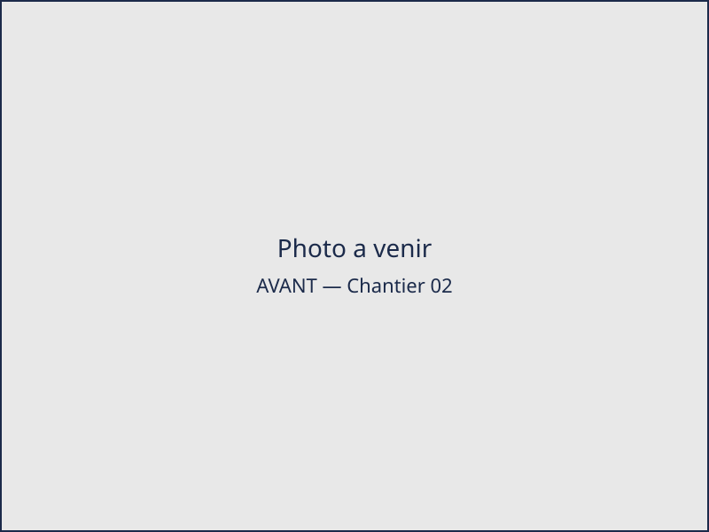
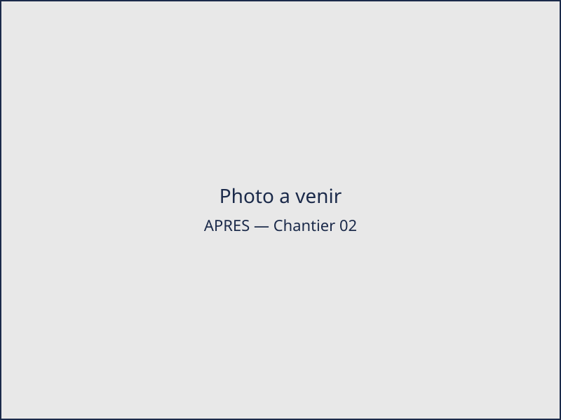

Nos chantiers, en avant / après
Quelques exemples de travaux de peinture intérieure et de plâtrerie réalisés par David NEYRON à Saint-Étienne, Firminy et dans le bassin stéphanois.
-
Rénovation peinture intérieure — Saint-Étienne (42)
Avant Après Préparation des supports, application de deux couches de peinture mate et reprise soignée des angles et des plinthes.
-
Réfection de plâtrerie — Firminy (42)

Avant 
Après Reprise d'enduit et de plâtre sur cloisons abîmées, ponçage et préparation complète des surfaces avant mise en peinture.